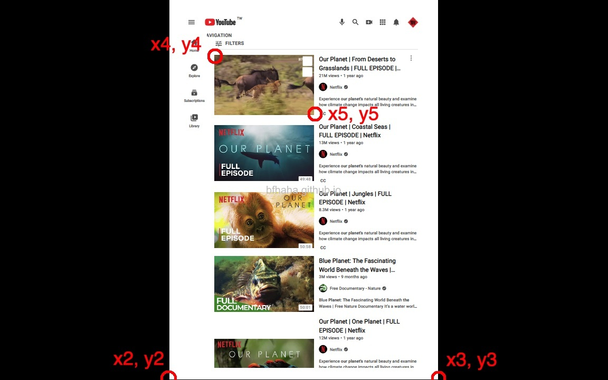

下面按照筆者常用的Adobe Acrobat的幾個功能，分別說明如何利用不同的工具來達到這些功能。
有很多線上工具也可以達到一樣的效果，例如搜尋pdf combine online，但是有些網站會有限制數量或是大小，例如smallpdf.com一天只能處理兩個檔案，而且有時候檔案太大，上傳就要花很多時間甚至超過限制。
閱讀pdf的部分還是用Adobe Acrobat Reader，畢竟是官方出的，而且是免費的，程式也不大。
假設讀者都懂一些基本的Python了。
大部分都要用到Python的套件PyPDF2，安裝指令為pip install pypdf2
在Windows中，如果出現SyntaxError: (unicode error) 'unicodeescape' codec can't decode bytes in position x-x: truncated \uXXXX escape，可能是因為在字串前面沒有加上r，例如image1 = Image.open(r'c:\users\bfhaha\1.jpg')。
如果只有一個jpg檔案要轉成pdf，可以直接用Chrome開啟該jpg檔案，然後按列印，印表機選擇Save as PDF。
如果jpg檔案不多的話，可以用JPG to PDF這個線上工具來完成。
要先安裝pip install image
參考這裡學到的，利用下面的python程式碼來完成。
這個方法的效果不是很令人滿意，合併後的圖檔會出現一些色彩的斑點，雖然不明顯，但品質比不上線上的工具。
from PIL import Image
image1 = Image.open('1.jpg')
image2 = Image.open('2.jpg')
image3 = Image.open('3.jpg')
im1 = image1.convert('RGB')
im2 = image2.convert('RGB')
im3 = image3.convert('RGB')
imagelist = [im2,im3]
im1.save('result.pdf',save_all=True, append_images=imagelist)
如果檔案不大的話，可以用Combine PDF這個線上工具來完成。
參考這裡學到的，利用下面的python程式碼來完成。
import PyPDF2
# Open the files that have to be merged one by one
pdf1File = open('FirstInputFile.pdf', 'rb')
pdf2File = open('SecondInputFile.pdf', 'rb')
# Read the files that you have opened
pdf1Reader = PyPDF2.PdfFileReader(pdf1File)
pdf2Reader = PyPDF2.PdfFileReader(pdf2File)
# Create a new PdfFileWriter object which represents a blank PDF document
pdfWriter = PyPDF2.PdfFileWriter()
# Loop through all the pagenumbers for the first document
for pageNum in range(pdf1Reader.numPages):
pageObj = pdf1Reader.getPage(pageNum)
pdfWriter.addPage(pageObj)
# Loop through all the pagenumbers for the second document
for pageNum in range(pdf2Reader.numPages):
pageObj = pdf2Reader.getPage(pageNum)
pdfWriter.addPage(pageObj)
# Now that you have copied all the pages in both the documents, write them into the a new document
pdfOutputFile = open('MergedFiles.pdf', 'wb')
pdfWriter.write(pdfOutputFile)
# Close all the files - Created as well as opened
pdfOutputFile.close()
pdf1File.close()
pdf2File.close()
在Chrome中開啟pdf檔案，按下列印，印表機選擇[Save as PDF]，在[Pages]選擇[Custom]，就可以輸入要擷取的頁面範圍。注意，Chrome讀取pdf檔案的速度有點慢，所以建議可以先在Reader中決定要列印的頁數，再到Chrome中輸入，在Chrome中不需要等到左邊預覽畫面完成，就可以輸入擷取的頁面範圍，但也是要等到讀取完成才會跳出另存新檔的對話框。而且注意，Chrome設定列印的頁碼是總頁碼，跟Reader不一樣。
參考Automate The Boring Stuff With Python這本書學到的，利用下面的python程式碼來完成。
from PyPDF2 import PdfFileWriter, PdfFileReader
output = PdfFileWriter() # open output
input = PdfFileReader(open('test.pdf', 'rb')) # open input
n = input.getNumPages()
for i in range(n):
page = input.getPage(i)
if i+1 in [2,3]: # The pages you want to rotate
page.rotateClockwise(90)
output.addPage(page) # insert page
outputStream = open('result.pdf','wb') #creating result pdf JCT
output.write(outputStream) #writing to result pdf JCT
outputStream.close() #closing result JCT
步驟頗麻煩，如果檔案不大的話，建議還是用其他工具，例如PDFResizer。
參考這裡學到的，利用下面的python程式碼來完成。
首先要執行下面的程式碼，獲得pdf的版面尺寸。
from PyPDF2 import PdfFileWriter, PdfFileReader
input = PdfFileReader(open("test.pdf","rb"))
page = input.getPage(0)
print(page.cropBox.getUpperRight())
可以得到一組座標，假設是(x1, y1)，x1, y1也會是這份pdf文件的寬度與高度。注意到pdf的尺寸計算座標方式跟一般來說電腦圖像不一樣，pdf文件是以左下角為(0,0)，往右上角計算，一般電腦圖像是以左上角為(0,0)，往右下角計算。所以在決定裁切頁面的裁切點座標時候有點麻煩，下面是計算的公式，原理我就不解釋了。
先把pdf文件切換到全螢幕檢視，然後將整個螢幕截圖下來（Windows可以按鍵盤上的Prt Scm鍵，MacOS可以按Command+Shift+3），把擷取下來的螢幕畫面用小畫家或是GIMP開啟，這兩個軟體都會在下方顯示游標所在位置的座標。
我們要用下面的公式來決定裁切範圍的頂點座標。
page.cropBox.upperLeft = (x1*(x4-x2)/(x3-x2),(1-y4/y3)*y1) page.cropBox.lowerRight = (x1*(x5-x2)/(x3-x2),(1-y5/y3)*y1)
這裡有個幫你計算的小工具，將各個數值輸入後即會幫你自動計算。
(x1,y1)=(,)
(x2,y2)=(,)
(x3,y3)=(,)
(x4,y4)=(,)
(x5,y5)=(,)
page.cropBox.upperLeft = (,)
page.cropBox.lowerRight = (,)
然後將page.cropBox.upperLeft及page.cropBox.lowerRight的數值填入下面的程式碼中，執行並裁切頁面。
from PyPDF2 import PdfFileWriter, PdfFileReader
output = PdfFileWriter() # open output
input = PdfFileReader(open('test.pdf', 'rb')) # open input
n = input.getNumPages()
for i in range(n):
page = input.getPage(i)
page.cropBox.upperLeft = (100,200)
page.cropBox.lowerRight = (300,400)
output.addPage(page) # insert page
outputStream = open('result.pdf','wb') #creating result pdf JCT
output.write(outputStream) #writing to result pdf JCT
outputStream.close() #closing result JCT
參考這裡學到的，利用下面的python程式碼來完成。
from PyPDF2 import PdfFileWriter, PdfFileReader
output = PdfFileWriter() # open output
input = PdfFileReader(open('test.pdf', 'rb')) # open input
n = input.getNumPages()
for i in range(n):
output.addPage(input.getPage(i)) # insert page
output.addBookmark('Hello, World Bookmark', 0, parent=None) # add a bookmark on the first page
par = output.addBookmark('Second Bookmark', 5, parent=None) # add a bookmark on the sixth page
output.addBookmark('Third Bookmark', 7, parent=par) # add a child bookmark on the eighth page
outputStream = open('result.pdf','wb') #creating result pdf JCT
output.write(outputStream) #writing to result pdf JCT
outputStream.close() #closing result JCT
有兩種輸出方式，一種是得到一樣pdf檔案，只是其中的文字變成可以搜尋，另一種是提取出pdf檔案中的文字。
如果是第一種，可以用OCR Space來完成，不過有一些限制，手動上傳的部分是限制5MB的檔案大小，沒有頁數、次數限制。建議選擇Create searchable PDF with invisible text layer。
如果是第二種，可以用Online OCR，檔案大小限制15MB，未註冊的話只能識別單頁（上傳多頁的pdf也只會輸出第一頁的結果），註冊後可以上傳多頁的pdf檔案。對於中文的辨識結果還蠻棒的，比Adobe Acrobat還好。
下面提供在本機上實現第一種的方法，主要是用到Tesseract。對於英文的辨識效果很好，但對於中文的辨識效果就很差。
這裡是以MacOS做範例，在terminal中，輸入pip install ocrmypdf來安裝ocrmypdf。
接著要安裝tesseract，否則會出現This error normally occurs when ocrmypdf can't find the Leptonica library, which is usually installed with Tesseract OCR.的錯誤訊息。安裝的指令為brew install tesseract。
要識別pdf檔案時，輸入指令ocrmypdf input.pdf output.pdf即可。
預設是辨識英文，如果要辨識其他語言，先到這裡下載你要的語言（會是以traineddata為副檔名），例如中文就是下載chi_tra_vert.traineddata，放到/usr/local/Cellar/tesseract/版本號/share/tessdata之下，然後辨識的指令改為ocrmypdf --language chi_tra_vert input.pdf output.pdf，不過辨識結果非常差。官方網站是說要修正輸入的圖片，參考這裡。
有另一個工具是pypdfocr，不過筆者在使用的時候出現下面的錯誤訊息，所以無法使用。
print traceback.print_exc(e)
^
SyntaxError: invalid syntax
把一個pdf檔案，每一頁存成一個獨立的pdf檔。
參考這裡學到的，利用下面的python程式碼來完成。
from PyPDF2 import PdfFileWriter, PdfFileReader
inputpdf = PdfFileReader(open("document.pdf", "rb"))
for i in range(inputpdf.numPages):
output = PdfFileWriter()
output.addPage(inputpdf.getPage(i))
with open("document-page%s.pdf" % i, "wb") as outputStream:
output.write(outputStream)
有時候pdf檔案太大，或是裡面有很多圖，搜尋其中的文字時就會變得很慢，（如果有Acrobat，則可以使用內建的Manage Embedded Index功能），我們可以把pdf檔案中的文字提取出來存成文字檔，加快搜尋速度，不過這個方法並非完美，對於一些圖文並茂的文字，提取文字的完整度並不是很高。
import PyPDF2
pdfFileObj = open('test.pdf', 'rb')
pdfReader = PyPDF2.PdfFileReader(pdfFileObj)
f = open("test.txt", "a")
for i in range(pdfReader.numPages):
pageObj = pdfReader.getPage(i)
text = pageObj.extractText()
f.write(text)
f.write("\n")
f.close()